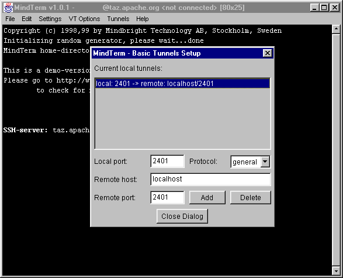
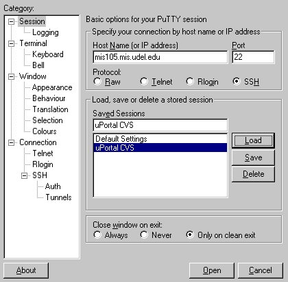
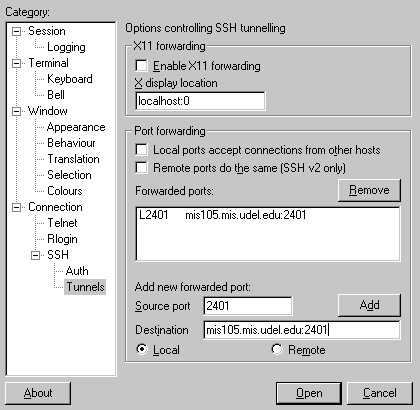
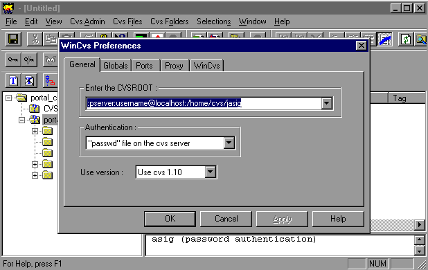

Accessing the uPortal Source Code
|
All Users All users that would like access to the source code for
uPortal can do so through our web front end to the uPortal CVS repository. This
access is read-only. The URL for the the web front end to CVS is: |
| Contributing Developers All users wishing to contribute to the project must first
register with the JA-SIG
Clearinghouse. |
| CVS Access on Windows On Windows, you need one of the following software products for each category:
You can find other SSH clients here but the above are the only ones recommended since they do SSH tunneling (most SSH clients just do terminal emulation). In addition, if you are behind a corporate firewall, your best option is to use a socks proxy. Most SSH software knows how to traverse socks proxies. In addition, there are socks utility programs that let you "sockisfy" any application. Contact your sysadmin for details. How to Connect using MindTerm This is an illustrated example showing the MindTerm program. Assuming you have installed the Mindterm classes (or .jar archive) on your system classpath (and, of course, that you have a Java virtual machine available on your system), the first step is turn on the client. From the DOS prompt type:
Connect to SSH host mis105.mis.udel.edu by selecting Settings, New Server from the menu, and then typing mis105.mis.udel.edu for the Server name. When you click Connect, your username will be requested and the password. Don't worry about transmitting your password since SSH is done exactly to allow you to transmit your password without worrying about sniffing and other security holes of normal remote shells. Now, go to the tunnels menu and select Basic to display the dialog box. Fill in the fields so that local port 2401 is directed to host "localhost" on the remote port 2401, as shown in the picture below: When mis105 welcomes you and its prompt appears, you can safely minimize your mindterm window since, for plain WinCVS operation, you won't need to type anything in the ssh terminal. The WinCVS client will send CVS commands thru the SSH tunnel transparently. How to Connect using PuTTY This is an illustrated example showing the PuTTY program. Assuming you have installed the PuTTy program launch it from Windows or a DOS prompt and the PuTTY configuration window will appear: First, enter mis105.mis.udel.edu into the "Host Name (or IP Address)" field, then select SSH in the in the protocol section. Next, type in a session name in the "Saved Sessions" box (for example, uPortal CVS) and click on "Save". The screen should appear as shown in the picture below: Now, click on the Connection/SSH/Tunnels item in the categories window on the left (you may need to expand the menu). In the "Add new forwarded section", type in the CVS port number (2401) into the source port box, then enter mis105.mis.udel.edu:2401 into the Destination box. Make sure that "local" is check then click on the Add button. The screen should look like the picture below: Click on the Save button, then on the Open button. When a new DOS window appears you will be prompted for a user id and password. This is your local user name and password. Once you have logged in, you can close the DOS window. The WinCVS client will send CVS commands thru the SSH tunnel transparently. Launching the WinCVS client Launch the WinCVS client. The first time, it will ask you the basic configuration preferences that it needs. These are the CVS repository location and authentication information. The screenshot below tells you what you should enter. Note that you must replace the string username in the repository location with your own username on mis105.  At this point you software is setup and first thing to do
is to authenticate yourself on the CVS repository. This is done by logging in
the server with the menu Now your WinCVS client is ready to perform operations on
the remote CVS repository. First action to take is to NOTE: If you previously checked out uPortal using anonymous CVS, you can not use the same portal subdirectory. Every subdirectory contains a CVS directory, which contains a file calle "Root". This file has the CVSROOT which was created when the anonymous checkout occured (:pserver:anonymous@mis105.mis.udel.edu:/home/cvs/jasig). In order to use the same directory this file will need to be modified so that it refers to the developers CVSROOT (:pserver:user@localhost:/home/cvs/jasig). It is recommend that a separate subdirectory be used for development. |
| CVS Access on Unix On Unix, you need the following software products: Depending on your platform you may be able to pick up precompiled versions or have to compile them yourself. Notes Since both CVS and SSH are based on open standards, there are lots of CVS and SSH tools freely available on the net, both of command line and GUI behavior. This means that any compliant implementations of those standards should work as well. For some more software options as well as other tips and tricks, see www.hyperreal.org/info/ssh In addition, if you are behind a corporate firewall, your best option is to use a socks proxy. Most SSH software knows how to traverse socks proxies. In addition, there are socks utility programs that let you "sockisfy" any application. Contact your sysadmin for details. How to Connect The first step is to set up the SSH tunnel to mis105. To do this, you need to have your SSH client software redirect your local port 2401 to the far side of the SSH connection. The command looks something like this:
The next step is to use the CVS pserver functionality to login. You'll want to do this in a seperate terminal from the one that you logged into mis105 with so that you check out the files to your local machine and not to your account on mis105! This command looks like this:
Note that the CVS client thinks it is talking to a server running on your local machine, but in fact is talking to the CVS pserver on mis105 thanks to the SSH tunnel. After you login, you can check out any of the source trees. The command to checkout the JA-SIG Portal source is:
Once you checkout a source tree, all CVS operations in that source tree do not require the -d :pserver: argument. This page based on document created by
John Laker of the University of Delaware. |